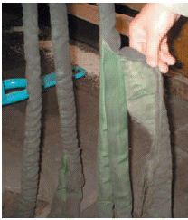
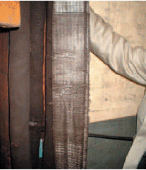

Anschlagmittel aus Chemiefasern sind mindestens einmal jährlich durch einen Sachkundigen (befähigte Person gemäß § 10 BetrSichV) prüfen zu lassen. Entsprechend den Einsatzbedingungen und den betrieblichen Gegebenheiten können zwischenzeitlich weitere Prüfungen durch einen Sachkundigen erforderlich werden. Aufgrund der Beanspruchung von Anschlagmitteln wird dringend die Festlegung kürzerer Prüffristen als einmal jährlich empfohlen (Bilder 3-1 und 3-2).
Anschlagmittel aus Chemiefasern sind während des Gebrauchs auf augenfällige Mängel hin zu beobachten. Werden Mängel festgestellt, welche die Sicherheit beeinträchtigen, sind die Chemiefaserhebebänder der weiteren Benutzung zu entziehen.
Mit aggressiven oder sonstigen den Einsatz gefährdenden Stoffen behaftete oder verschmutzte Anschlagmittel aus Chemiefasern müssen sorgfältig durchgesehen und erforderlichenfalls, z. B. durch den Hersteller, geprüft werden.

Bild 3-1: Prüfung durch einen Sachkundigen, Beispiel 1

Bild 3-2: Prüfung durch einen Sachkundigen, Beispiel 2